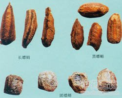

桑螵蛸

拼音
Sānɡ Piāo Shāo
别名
团螵蛸、长螵蛸、黑螵蛸、螳螂巢、螳螂子、刀螂子、螳螂蛋、流尿狗
来源
本品为螳螂科昆虫大刀螂Tenodera sinensis Saussure 、小刀螂Statilia maculata （Thunberg）或巨斧螳螂Hierodula patellifera （Serville）的干燥卵鞘。以上三种分别习称“团螵蛸”、“长螵蛸”及“黑螵蛸”。深秋至次春采收，除去杂质，蒸至虫卵死后，干燥。
生境分布
生态环境：1.栖于草丛及树枝上。 2多栖于向阳背风的灌木、矮小丛及草丛茺地处。 4. 资源分布：1.全国大部分地区均有分布。 2.分布于南方各地。 3.全国大部分地区均有分布。 4.分布于我国广东、台湾和湖北等地。
药材特点
详"螳螂"条。
性状
团螵蛸：略呈圆柱形或半圆形，由多层膜状薄片叠成，长2.5～4cm，宽2～3cm。表面浅黄褐色，上面带状隆起不明显，底面平坦或有凹沟。体轻，质松而韧，横断面可见外层为海绵状，内层为许多放射状排列的小室，室内各有一细小椭圆形卵，深棕色，有光泽。气微腥，味淡或微咸。 长螵蛸：略呈长条形，一端较细，长2.5～5cm，宽1～1.5cm。表面灰黄色，上面带状隆起明显，带的两侧各有一条暗棕色浅沟及斜向纹理。质硬而脆。 黑螵蛸：略呈平行四边形，长2～4cm，宽1.5～2cm。表面灰褐色，上面带状隆起明显，两侧有斜向纹理，近尾端微向上翘。质硬而韧。
性味
甘、咸，平。
功能主治
益肾固精，缩尿，止浊。用于遗精滑精，遗尿尿频，小便白浊。
用法用量
5～9g。
化学成分
含蛋白质及脂肪等。卵囊附着的蛋白质膜上，含柠檬酸钙（六分子结晶水）的结晶。卵黄球含糖蛋白及脂蛋白。
药理作用
1：无药理作用数据
摘录
《中国药典》